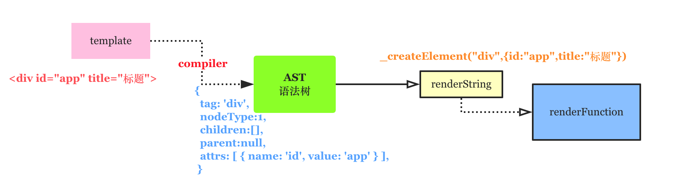

在 [html-parser](http://wendingding.com/2019/08/25/Gossip%20-%20html-parser/) 这篇文章中，简单探讨了 html模板字符串 编译为 AST 抽象语法树的过程，本文作为后续将继续讨论 AST 转换为 渲染字符串并最终调整为 `render 渲染函数`的具体过程，这样的讨论有益于我们加深对常见的`模板引擎`其工作机制以及`Vue`等前端框架的理解 。

在上图中简单画出了这篇文章的代码要完成的主要工作，即把 html-parser 中模板编译得到的 AST 抽象语法树处理为 render字符串继而包装为render渲染函数。
假设我们要编译的模板字符串为：
1 <div id="app" title="标题" ><p>hello</p><span>{{msg}}</span></div>
那么编译为 AST 语法树后大概应该长成下面这样。
1 2 3 4 5 6 7 8 9 10 11 12 13 14 15 16 17 { tag : 'div' , attrs : [ { name : 'id' , value : 'app' }, { name : 'title' , value : '标题' } ], children : [ { tag : 'p' , attrs : [], children : [Array ], parent : [Circular], nodeType : 1 }, { tag : 'span' , attrs : [], children : [Array ], parent : [Circular], nodeType : 1 } ], parent : null , nodeType : 1 }
我们需要通过代码来得到的renderString应该是下面这样的字符串结构(忽略换行)。
1 2 3 4 '_createElement("div", {id:"app",title:"标题"}, _createElement("p",null,_v("hello")), _createElement("span",null,_v(_s(msg))))'
在得到的整个字符串中，主要包含的要素有：_createElement这是创建函数的名称，div和p等这是对应标签的名称，{id:"app",title:"标题"}这部分是对应标签的属性节点，如果当前标签存在子标签，那么应该以递归的方式来进行处理。因为整个过程比较复杂，所有下面分成 属性节点处理 和 标签(子)节点处理 两个部分。
属性节点的处理
属性节点的处理要求把attrs:[ { name: 'id', value: 'app' }, { name: 'title', value: '标题' } ]这样的对象结构转换为{id:"app",title:"标题"}字符串，难度不大。
1 2 3 4 5 6 7 8 9 10 11 12 13 14 15 16 17 function generateAttrs (attrs ) let str = '' ; attrs.forEach((attr, idx ) => { str += `${attr.name} :${JSON .stringify(attr.value)} ,` }); str = `{ ${str.slice(0 , -1 )} }` ; return str; } let attrs = [{ name : 'id' , value : 'app' }, { name : 'title' , value : '标题' }];let attrsString = generateAttrs(attrs);console .log(attrsString);
在上面代码中封装了的generateAttrs函数，虽然能够解决标签中简单属性节点但还需要注意一种特殊的属性节点，那就是style，我们在给标签设置行内样式的时候，是可以给 style设置多个样式的，比如宽度和高度。
1 2 3 4 5 6 console .log( generateAttrs([name:"style" ,value :"color:red;background:#000" ]));'{ style:"color:red;background:#000" }' '{ style:{"color":"red","background":"#000"} }`
调整generateAttrs函数的实现。
1 2 3 4 5 6 7 8 9 10 11 12 13 14 15 16 17 18 19 20 21 function generateAttrs (attrs ) let str = '' ; attrs.forEach((attr, idx ) => { if (attr.name === 'style' ) { let obj = {}; attr.value.split(';' ).forEach(item => let [key, value] = item.split(':' ); obj[key] = value }); attr.value = obj; } str += `${attr.name} :${JSON .stringify(attr.value)} ,` }); str = `{ ${str.slice(0 , -1 )} }` ; return str; }
标签(子)节点的处理
标签(子)节点的处理因为涉及到标签嵌套(标签可能存在多个子标签)所以会稍显复杂。
这里我们暂且不考虑标签的属性节点，假设我们有模板字符串为<p>hello</p>,它转换之后的结果应该为_createElement("p",null,_v("hello")),这里_createElement为固定的函数名字，第一个参数p表示标签的类型(名称)，第二个参数用来放置属性节点( 如果没有属性节点那么显示为 null ),第三个参数_v("hello")表示 p标签的文本内容hello，此处如果标签中的内容为类似{{msg}}的插值语法，那么还需要处理为_createElement("span",null,_v(_s(msg))))结构，做额外的处理。
那么怎么转换呢？
1 2 3 4 5 6 7 8 9 10 11 function generateText (node ) let text = JSON .stringify(node.text); return `_v(${text} )` ; } console .log(generateText({ text : "hello" }));console .log(generateText({ text : "My name is {{name}}" }));
在上面的代码中，我封装了一个专门用来处理标签内容(字符串)的函数generateText，内部的逻辑非常简单只是字符串的无脑拼接而已。但是_v("My name is {{name}}")只能算是半成品，因为我们在真正渲染的时候，插值语法{{xx}}中的变量是需要用真正的实例数据来进行替换的，因此我们需要进一步处理为_v("My name is "+_s(name))这样的结构。那要怎么做呢？
要处理这个问题无疑是个挑战，因为当我们面对"My name is {{name}} "这样内容的时候，首先应该先把普通字符串和插值语法的部分区分开来，然后对插值语法的部分单独处理成_s(name)结构，最后再拼接。
无疑，字符串插值语法部分的匹配需要用到正则表达式，下面试着给出对应的代码。
1 2 3 4 5 6 7 8 9 10 11 12 13 14 15 16 17 18 19 20 21 22 23 24 25 26 27 28 29 30 31 32 33 const defaultTagRE = /\{\{((?:.|\r?\n)+?)\}\}/g ;function generateText (node ) let tokens = []; let match, index; let text = node.text; let lastIndex = defaultTagRE.lastIndex = 0 ; while (match = defaultTagRE.exec(text)) { index = match.index; if (index > lastIndex) { tokens.push(JSON .stringify(text.slice(lastIndex, index))); } tokens.push(`_s(${match[1 ].trim()} )` ); lastIndex = index + match[0 ].length; } if (lastIndex < text.length) { tokens.push(JSON .stringify(text.slice(lastIndex))) } console .log("tokens" , tokens); return `_v(${tokens.join('+' )} )` ; } console .log(generateText({ text : "hello" }));console .log(generateText({ text : "My name is {{name}} biubiubiu @" }));
此外，我们还需要考虑到标签的嵌套，这个问题我们可以通过函数的递归调用来实现。
最后一步，我们还需要完成RenderString->RenderFunction,即把拼接好的字符串转换为函数，这个过程需要用到两个小技巧。我们可以通过 new Function来创建函数并将字符串转换为函数体内容，此外插值语法(如 {{name}} )中的name变量应该通过作用域绑定的方式来进行处理，因此这里还用到了with特性。
下面给出整个过程的完整代码。
1 2 3 4 5 6 7 8 9 10 11 12 13 14 15 16 17 18 19 20 21 22 23 24 25 26 27 28 29 30 31 32 33 34 35 36 37 38 39 40 41 42 43 44 45 46 47 48 49 50 51 52 53 54 55 56 57 58 59 60 61 62 63 64 65 66 67 68 69 70 71 72 73 74 75 76 77 78 79 80 81 82 83 84 85 86 87 88 89 90 91 92 93 94 95 96 97 98 99 100 101 102 103 104 105 106 107 108 109 110 111 112 113 114 115 116 117 118 119 120 121 122 123 124 125 126 127 128 129 130 131 132 133 134 135 136 137 138 139 140 141 142 143 144 145 146 147 148 149 150 151 152 153 154 155 156 157 158 159 160 161 162 163 164 165 166 167 168 169 170 171 172 173 174 175 176 177 178 179 180 181 182 183 184 185 186 187 188 189 190 191 192 193 194 195 196 197 198 199 200 201 202 203 204 205 206 207 208 209 210 211 212 213 214 215 216 217 218 219 220 221 222 223 const nc_name = `[a-zA-Z_][\\-\\.0-9_a-zA-Z]*` ;const q_nameCapture = `((?:${nc_name} \\:)?${nc_name} )` ;const startTagOpen = new RegExp (`^<${q_nameCapture} ` );const startTagClose = /^\s*(\/?)>/ ;const endTag = new RegExp (`^<\\/${q_nameCapture} [^>]*>` );const att =/^\s*([^\s"'<>\/=]+)(?:\s*(=)\s*(?:"([^"]*)"+|'([^']*)'+|([^\s"'=<div>`]+)))?/ const defaultTagRE = /\{\{((?:.|\r?\n)+?)\}\}/g ;let NODE_TYPE_TEXT = 3 ;let NODE_TYPE_ELEMENT = 1 ;let stack = []; let root = null ;let currentParent;function compiler (html ) function advance (n ) html = html.substring(n); } function parser_start_html ( let start = html.match(startTagOpen); if (start) { const tagInfo = { tag : start[1 ], attrs : [] }; advance(start[0 ].length); let attr, end; while (!(end = html.match(startTagClose)) && (attr = html.match(att))) { tagInfo.attrs.push({ name : attr[1 ], value : attr[3 ] || attr[4 ] || attr[5 ] }); advance(attr[0 ].length); } if (end) { advance(end[0 ].length); return tagInfo; } } } while (html) { let textTag = html.indexOf('<' ); if (textTag == 0 ) { let startTagMatch = parser_start_html(); if (startTagMatch) { start(startTagMatch.tag, startTagMatch.attrs); continue ; } let endTagMatch = html.match(endTag); if (endTagMatch) { advance(endTagMatch[0 ].length); end(endTagMatch[1 ]); continue ; } } let text; if (textTag >= 0 ) { text = html.substring(0 , textTag); } if (text) { advance(text.length); chars(text); } } return root; } function chars (text ) text = text.replace(/\s/g , '' ); if (text) { currentParent.children.push({ text, nodeType : NODE_TYPE_TEXT }) } } function start (tag, attrs ) let element = createASTElement(tag, attrs); if (!root) { root = element; } currentParent = element; stack.push(element); } function end (tagName ) let element = stack.pop(); currentParent = stack[stack.length - 1 ]; if (currentParent) { element.parent = currentParent; currentParent.children.push(element); } } function createASTElement (tag, attrs ) return { tag, attrs, children : [], parent : null , nodeType : NODE_TYPE_ELEMENT } } function generateAttrs (attrs ) let str = '' ; attrs.forEach((attr, idx ) => { if (attr.name === 'style' ) { let obj = {}; attr.value.split(';' ).forEach(item => let [key, value] = item.split(':' ); obj[key] = value }); attr.value = obj; } str += `${attr.name} :${JSON .stringify(attr.value)} ,` }); str = `{ ${str.slice(0 , -1 )} }` ; return str; } function generateChildren (el ) let children = el.children; return (children && children.length > 0 ) ? `${children.map(c => generate(c)).join(',' )} ` : false ; } function generate (node ) return node.nodeType == 1 ? generateRenderString(node) : generateText(node); } function generateText (node ) let tokens = []; let match, index; let text = node.text; let lastIndex = defaultTagRE.lastIndex = 0 ; while (match = defaultTagRE.exec(text)) { index = match.index; if (index > lastIndex) { tokens.push(JSON .stringify(text.slice(lastIndex, index))); } tokens.push(`_s(${match[1 ].trim()} )` ); lastIndex = index + match[0 ].length; } if (lastIndex < text.length) { tokens.push(JSON .stringify(text.slice(lastIndex))) } return `_v(${tokens.join('+' )} )` ; } function generateRenderString (el ) let children = generateChildren(el); return `_createElement("${el.tag} ",${el.attrs.length ? generateAttrs(el.attrs) : 'null' } ${ children ? `,${children} ` : '' } )` ; } function compilerToFunction (template ) let root = compiler(template); let renderString = generateRenderString(root); let renderFn = new Function (`with(this){ return ${renderString} }` ); console .log("renderString" , renderString,'renderFn' , renderFn); } const template = `<a id="app" title="标题"><p>hello</p><span>My name is {{name}} dududu!!!</span></a>` ; compilerToFunction(template);
最后，给出上述代码的测试结果。
1 2 3 4 5 6 7 8 9 10 11 12 13 14 15 renderString _createElement("a" , { id:"app" ,title:"标题" }, _createElement("p" ,null,_v("hello" )), _createElement("span" ,null,_v("My name is" +_s(name)+"dududu!!!" ))) renderFn function anonymous with(this){ return _createElement("a" , { id:"app" ,title:"标题" }, _createElement("p" ,null,_v("hello" )), _createElement("span" ,null,_v("My name is" +_s(name)+"dududu!!!" ))) } }